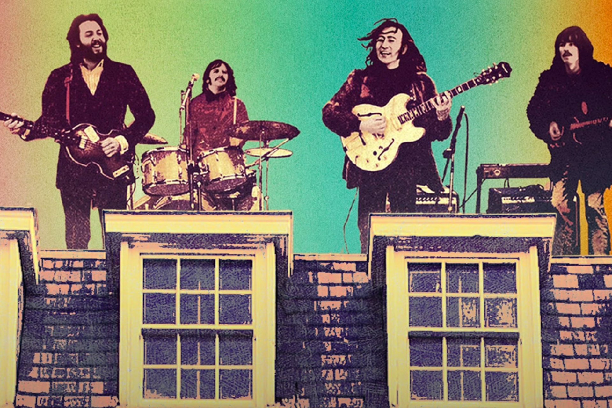
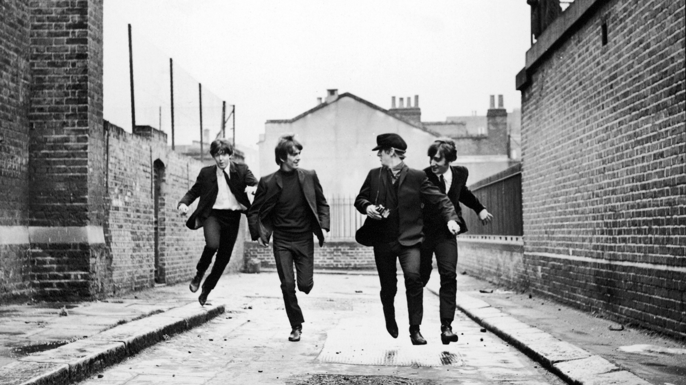
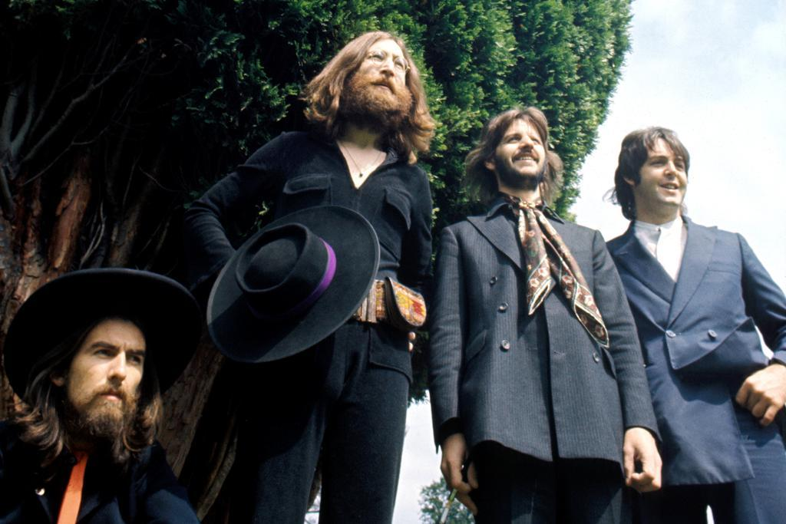

No dia 30 de janeiro de 1969, os Beatles surpreenderam o mundo com uma performance histórica no telhado da sede da Apple Corps, em Londres. Essa apresentação icônica marcou a última vez que a banda tocou ao vivo junta e serviu como o grandioso clímax do documentário Let It Be. Com um setlist que incluiu sucessos como "Get Back" e "Don't Let Me Down", o show no rooftop capturou a essência revolucionária e criativa dos Beatles, emocionando os espectadores que se aglomeraram nas ruas e telhados vizinhos para assistir ao momento inesquecível.
Por: Rodrigo Fontes
Ler mais...

Em 1964, os Beatles viviam o auge da Beatlemania, e as gravações de A Hard Day’s Night capturaram perfeitamente o frenesi e a energia daquele momento histórico. O filme, que misturava ficção e realidade, apresentou um dia na vida da banda, explorando seu humor irreverente, carisma único e talento musical. Com canções icônicas como a faixa-título e "Can’t Buy Me Love", o longa se tornou não apenas um sucesso de bilheteria, mas também um marco cultural que consolidou os Beatles como ícones globais e mostrou ao mundo o poder transformador do rock and roll.
Por: Rodrigo Fontes
Ler mais...

Durante as gravações de Abbey Road em 1969, os Beatles enfrentavam um período de tensões internas, com a banda próxima de sua separação definitiva. Apesar do clima de divergências, o quarteto conseguiu canalizar sua genialidade coletiva para criar um de seus álbuns mais aclamados. Marcado por arranjos sofisticados, harmonias impecáveis e faixas icônicas como "Come Together" e "Here Comes the Sun", Abbey Road representou um adeus grandioso e otimista à trajetória conjunta da banda.
Por: Rodrigo Fontes
Ler mais...